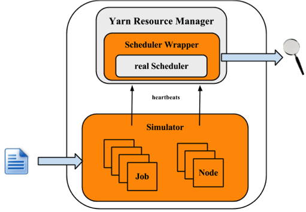
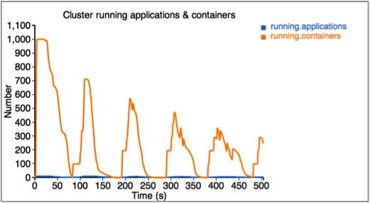
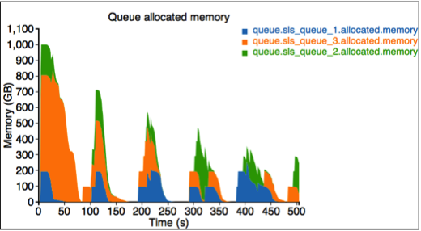
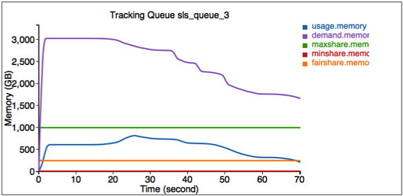
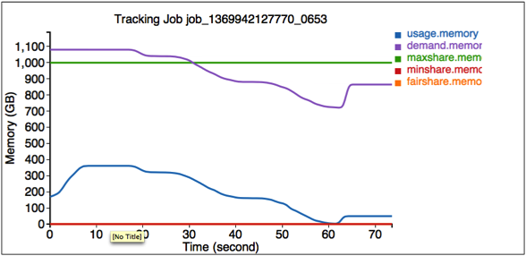

The Yarn scheduler is a fertile area of interest with different implementations, e.g., Fifo, Capacity and Fair schedulers. Meanwhile, several optimizations are also made to improve scheduler performance for different scenarios and workload. Each scheduler algorithm has its own set of features, and drives scheduling decisions by many factors, such as fairness, capacity guarantee, resource availability, etc. It is very important to evaluate a scheduler algorithm very well before we deploy in a production cluster. Unfortunately, currently it is non-trivial to evaluate a scheduler algorithm. Evaluating in a real cluster is always time and cost consuming, and it is also very hard to find a large-enough cluster. Hence, a simulator which can predict how well a scheduler algorithm for some specific workload would be quite useful.
The Yarn Scheduler Load Simulator (SLS) is such a tool, which can simulate large-scale Yarn clusters and application loads in a single machine.This simulator would be invaluable in furthering Yarn by providing a tool for researchers and developers to prototype new scheduler features and predict their behavior and performance with reasonable amount of confidence, thereby aiding rapid innovation.
The simulator will exercise the real Yarn ResourceManager removing the network factor by simulating NodeManagers and ApplicationMasters via handling and dispatching NM/AMs heartbeat events from within the same JVM. To keep tracking of scheduler behavior and performance, a scheduler wrapper will wrap the real scheduler.
The size of the cluster and the application load can be loaded from configuration files, which are generated from job history files directly by adopting Apache Rumen.
The simulator will produce real time metrics while executing, including:
The following figure illustrates the implementation architecture of the simulator.
The simulator takes input of workload traces, and fetches the cluster and applications information. For each NM and AM, the simulator builds a simulator to simulate their running. All NM/AM simulators run in a thread pool. The simulator reuses Yarn Resource Manager, and builds a wrapper out of the scheduler. The Scheduler Wrapper can track the scheduler behaviors and generates several logs, which are the outputs of the simulator and can be further analyzed.
This section will show how to use the simulator. Here let $HADOOP_ROOT represent the Hadoop install directory. If you build Hadoop yourself, $HADOOP_ROOT is hadoop-dist/target/hadoop-$VERSION. The simulator is located at $HADOOP_ROOT/share/hadoop/tools/sls. The fold sls containers four directories: bin, html, sample-conf, and sample-data
The following sections will describe how to use the simulator step by step. Before start, make sure that command hadoop is included in your $PATH environment parameter.
Before we start, make sure Hadoop and the simulator are configured well. All configuration files for Hadoop and the simulator should be placed in directory $HADOOP_ROOT/etc/hadoop, where the ResourceManager and Yarn scheduler load their configurations. Directory $HADOOP_ROOT/share/hadoop/tools/sls/sample-conf/ provides several example configurations, that can be used to start a demo.
For configuration of Hadoop and Yarn scheduler, users can refer to Yarn’s website ( http://hadoop.apache.org/docs/current/hadoop-yarn/hadoop-yarn-site/).
For the simulator, it loads configuration information from file $HADOOP_ROOT/etc/hadoop/sls-runner.xml.
Here we illustrate each configuration parameter in sls-runner.xml. Note that $HADOOP_ROOT/share/hadoop/tools/sls/sample-conf/sls-runner.xml contains all the default values for these configuration parameters.
The simulator uses a thread pool to simulate the NM and AM running , and this parameter specifies the number of threads in the pool.
The total memory for each NMSimulator.
The total vCores for each NMSimulator.
The heartbeat interval for each NMSimulator.
The heartbeat interval for each AMSimulator.
The AMSimulator implementation for MapReduce-like applications. Users can specify implementations for other type of applications.
The memory required for each container simulator.
The vCores required for each container simulator.
The simulator introduces Metrics to measure the behaviors of critical components and operations. This field specifies whether we open (ON) or close (OFF) the Metrics running.
The port used by simulator to provide real-time tracking. The default value is 10001.
The implementation of scheduler metrics of Fifo Scheduler.
The implementation of scheduler metrics of Fair Scheduler.
The implementation of scheduler metrics of Capacity Scheduler.
The simulator supports two types of input files: the rumen traces and its own input traces. The script to start the simulator is slsrun.sh.
$ $HADOOP_ROOT/share/hadoop/tools/sls/bin/slsrun.sh
--input-rumen|--input-sls=<TRACE_FILE1,TRACE_FILE2,...>
--output-dir=<SLS_SIMULATION_OUTPUT_DIRECTORY> [--nodes=<SLS_NODES_FILE>]
[--track-jobs=<JOBID1,JOBID2,...>] [--print-simulation]In comparison to rumen format, here the sls format is much simpler and users can easily generate various workload. The simulator also provides a tool to convert rumen traces to sls traces.
$ $HADOOP_ROOT/share/hadoop/tools/sls/bin/rumen2sls.sh
--rumen-file=<RUMEN_FILE>
--output-dir=<SLS_OUTPUT_DIRECTORY>
[--output-prefix=<SLS_FILE_PREFIX>]The Yarn Scheduler Load Simulator has integrated Metrics to measure the behaviors of critical components and operations, including running applications and containers, cluster available resources, scheduler operation timecost, et al. If the switch yarn.sls.runner.metrics.switch is set ON, Metrics will run and output it logs in --output-dir directory specified by users. Users can track these information during simulator running, and can also analyze these logs after running to evaluate the scheduler performance.
The simulator provides an interface for tracking its running in real-time. Users can go to http://host:port/simulate to track whole running, and http://host:port/track to track a particular job or queue. Here the host is the place when we run the simulator, and port is the value configured by yarn.sls.metrics.web.address.port (default value is 10001).
Here we'll illustrate each chart shown in the webpage.
The first figure describes the number of running applications and containers.
The second figure describes the allocated and available resources (memory) in the cluster.

The third figure describes the allocated resource for each queue. Here we have three queues: sls_queue_1, sls_queue_2, and sls_queue_3.The first two queues are configured with 25% share, while the last one has 50% share.
The fourth figure describes the timecost for each scheduler operation.

Finally, we measure the memory used by the simulator.

The simulator also provides an interface for tracking some particular jobs and queues. Go to http://<Host>:<Port>/track to get these information.
Here the first figure illustrates the resource usage information for queue SLS_Queue_1.
sls_queue_3" />The second figure illustrates the resource usage information for job job_1369942127770_0653.
job_1369942127770_0653" />After the simulator finishes, all logs are saved in the output directory specified by --output-dir in $HADOOP_ROOT/share/hadoop/tools/sls/bin/slsrun.sh.
Users can also reproduce those real-time tracking charts in offline mode. Just upload the realtimetrack.json to $HADOOP_ROOT/share/hadoop/tools/sls/html/showSimulationTrace.html. For browser security problem, need to put files realtimetrack.json and showSimulationTrace.html in the same directory.
YARN-1021 is the main JIRA that introduces Yarn Scheduler Load Simulator to Hadoop Yarn project.
Here we provide an example format of the sls json file, which contains 2 jobs. The first job has 3 map tasks and the second one has 2 map tasks.
{
"am.type" : "mapreduce",
"job.start.ms" : 0,
"job.end.ms" : 95375,
"job.queue.name" : "sls_queue_1",
"job.id" : "job_1",
"job.user" : "default",
"job.tasks" : [ {
"container.host" : "/default-rack/node1",
"container.start.ms" : 6664,
"container.end.ms" : 23707,
"container.priority" : 20,
"container.type" : "map"
}, {
"container.host" : "/default-rack/node3",
"container.start.ms" : 6665,
"container.end.ms" : 21593,
"container.priority" : 20,
"container.type" : "map"
}, {
"container.host" : "/default-rack/node2",
"container.start.ms" : 68770,
"container.end.ms" : 86613,
"container.priority" : 20,
"container.type" : "map"
} ]
}
{
"am.type" : "mapreduce",
"job.start.ms" : 105204,
"job.end.ms" : 197256,
"job.queue.name" : "sls_queue_2",
"job.id" : "job_2",
"job.user" : "default",
"job.tasks" : [ {
"container.host" : "/default-rack/node1",
"container.start.ms" : 111822,
"container.end.ms" : 133985,
"container.priority" : 20,
"container.type" : "map"
}, {
"container.host" : "/default-rack/node2",
"container.start.ms" : 111788,
"container.end.ms" : 131377,
"container.priority" : 20,
"container.type" : "map"
} ]
}